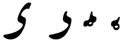
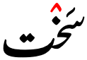
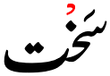
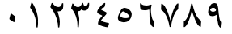
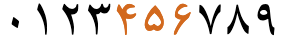
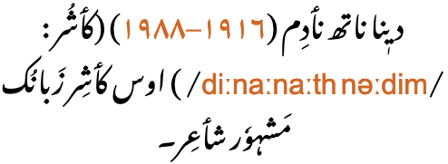
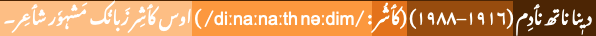
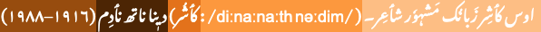
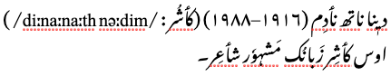
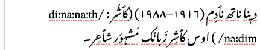

This page gathers together basic information about the Arabic script and its use for the Kashmiri language. It aims (generally) to provide an overview of the orthography and typographic features, and (specifically) to advise how to write Kashmiri using Unicode.
See the Arabic page for most of the information about how the Arabic script works, and the orthography used for the Arabic language. This page aims to provide Kashmiri-specific information.
Phonetic transcriptions on this page should be treated as an approximate guide, only. Many are more phonemic than phonetic, and there may be variations depending on the source of the transcription.
Fonts: There are few nastaliq fonts around, and few of those support Kashmiri. Even Noto Nastaliq Urdu doesn't support a couple of Kashmiri characters. Therefore, this page is set up to use SIL's Awami Nastaliq font by default if you have downloaded and installed it on your system. Unfortunately, this is a Graphite font and so only works fully in the Firefox web browser. Font settings are used to produce the rounded hamza diacritics, rather than the s-shaped ones in the Awami font. For Noto, a font language override (for Urdu) converts the jazm to an inverted v, rather than a circle. Note that you can select the Noto font by clicking on the thin, vertical blue bar at the bottom right of the window.
For information about the script in general, see the Arabic overview. The Perso-Arabic script is recognised as the official script of Kashmiri language by the Jammu and Kashmir government and the Jammu and Kashmir Academy of Art, Culture and Languages.wkl
کٲشُر
Kashmiri is written in the Devanagari script by Hindus. Muslims use the arabic script.
The Kashmiri Arabic orthography is derived from the Arabic/Persian abjads, where in normal use the script represents only consonant and long vowel sounds. However, Kashmiri is one of the Arabic orthographies that regularly indicates all vowel sounds, making it more like an alphabet.wkl,#Writing_system See the table to the right for a brief overview of features for the modern Kashmiri orthography using the Arabic script.
The Arabic alphabet has been adapted to cope with the many more vowels sounds in languages such as Kashmiri.
Kashmiri is principally written using the nasta'liq style of Arabic writing. Glyphs are more drawn out, and the baseline tends to be sloping from word to word.
Kashmiri text runs right-to-left in horizontal lines, but numbers and embedded Latin text are read left-to-right.
The script is cursive, and some basic letter shapes change radically, depending on what they join to. The nastaliq styling creates diagonal baselines between joined characters, and tends to reduce clarity about where one letter ends and the next starts. (The dots and other diacritics associated with letters become particularly useful for the reader.)
There is no case distinction.
Words are separated by spaces.
Modern Kashmiri has 19 basic letters and 6 aspirated digraphs in its alphabet to represent native sounds, but tends to spell words loaned from Persian, Arabic and Urdu using 13 more. Letters are used to indicate nasalisation and palatalisation (which is common in Kashmiri).
Representation of vowel sounds is complicated (a) because there are far more vowel sounds than in Arabic (or Persian), and (b) because the code points used to represent a given vowel typically differ according to whether this is an isolate, initial, medial, or final joining form. The choice between precomposed and decomposed realisations of a vowel letter is also complicated. The script draws on combinations of 21 code points in order to write 16 vowel sounds.
A mandatory ligature is used for combinations of lam + alif.
Additional diacritics indicate the absence of a vowel in consonant clusters, and gemination. Unlike other Arabic orthographies the jazm (sukun), used to show vowel absence, is commonly placed over the second consonant in a cluster, rather than the first – which means that that consonant may be associated with both a vowel diacritic and jazm diacritic.
Kashmiri uses native digits, and Arabic code points for several of the more common punctuation marks.
Joining forms
Because the Arabic script is 'cursive' (ie. joined-up) writing, letters tend to have different shapes depending on whether they join with adjacent letters or not (see cursive). Here we clarify some of the terminology used in this page to refer to these different forms.
Several characters have no left-joining form. This has an effect on the following letter shape.
When we say 'initial' forms, we generally refer to glyphs that only join to the left. Consonants that don't have a left-joining form use the unjoined glyph at the beginning of a word. Initial forms occur in word-medial position if they follow a glyph that doesn't join to the left.
Where we illustrate 'initial' forms of a vowel we typically show the word-initial form, which is always attached to or preceded by an aleph, eg. اَ or ایـ. If an initial form is immediately preceded by a consonant, the consonant takes the place of the aleph, eg. رَـ or ریـ.
In illustrations of shaping forms we normally show the 'isolated' form of a vowel as preceded by aleph, as it would be if written alone, eg. ای. In use following another letter, however, the aleph is dropped.
Word-final vowel forms come in two types. A vowel that can join with the preceding character uses the right-joining glyph, eg. بی. One that follows a letter that doesn't join to the left uses the isolated form, eg. ری. When we refer to the 'final' form, we are usually referring to the former, ie. the right-joined form.
Character index
The index points to locations where a character is mentioned in this page, and indicates whether it is used by the modern Kashmiri orthography described here.
See also a list of characters in the Arabic Unicode block not used for the modern Kashmiri orthography, grouped by General Category.
Show the index
Letters
Basic consonants
پ␣ب␣ت␣د␣ٹ␣ڈ␣ک␣گ␣ژ␣چ␣ج␣س␣ث␣ز␣ش␣ھ␣ہ␣م␣ن␣و␣ر␣ل␣ی␣ؠ
Extended consonants
ط␣ق␣خ␣غ␣ع␣ف␣ذ␣ث␣ص␣ض␣ظ␣ح␣ڑ
Vowels
آ␣أ␣إ␣ا␣ٲ␣ۄ␣ؤ␣ۂ␣ےۆ␣ێ␣ځ␣ݬ␣ࢡ
Other
ـ
Not used for Urdu
ٳ␣ي␣ك␣ٮ␣۪
Combining marks
Vowels
َ␣ُ␣ٚ␣ِ␣ٕ␣ٖ␣ٟ␣ٓ␣ٔ␣ٗ
Other
ّ␣ْ
Numbers
۰␣۴␣۵␣۶␣۴␣۵␣۶␣۷␣۸␣۹
Punctuation
۔␣،␣؛␣؟␣٪␣!␣(␣)␣:
Other
␣␣␣␣␣␣␣␣␣␣␣
Character lists show:
Phonology
These are sounds for the Kashmiri language.
Click on the sounds to see where else in the document they are referred to.
Unlike Arabic, Persian, and Urdu, all vowel diacritics are normally shown when writing Kashmiri.
This is the set of characters needed to represent the Kashmiri vowels, including decompositions and compositions:
ی␣ِ␣إ␣ٕ␣ٟ␣ُ␣ے␣ٚ␣و␣ۄ␣ٲ␣أ␣ٔ␣آ␣ا␣َ␣ٓ␣ٖ␣ٗ
Several of the characters are used in combinations to represent a given vowel sound, in a given position. Note that whether a vowel is represented using a precomposed or decomposed form is not straightforward (see encoding_choices).
The following table summarises the main vowel to character assigments. More information can be found by clicking on the characters above, or in the section vowel_mappings.
Each table cell shows word-initial, dual-joining, and word-final forms from right to left. Where the word-final form differs according to whether it is right-joining or unjoined, both are shown. Click/tap on items to see a list of the components for that cell.
i
iː
ɨ
ɨː
u
uː
اِ◌ِ◌ِ
ایٖیٖی
إ◌ٕ◌ٕ
اٟ◌ٟ◌ٟ
اُ◌ُ◌ُ
اوٗوٗوٗ
e
eː
o
oː
ایٚیٚ◌ٚےےٚ
اییے
اوٚوٚوٚ
اووو
ə
əː
ɔ
ɔː
أ◌ٔ◌ٔ
ٲٲٲ
اۄۄۄ
n/an/aۄآ
a
aː
اَ◌َ◌َ
آاا
For a question about the ordering of characters in final e, see final_e. For questions about whether to use precomposed or decomposed letters, see encoding_choices.
Precomposed vs. decomposed characters
إ␣أ␣آ␣ؤ␣ۂ
The characters just above are all consonants followed by the vowel ə that Unicode represents in NFC-normalised text as single, precomposed characters, but that normalise in NFD to a code point sequence. Generally, the precomposed form is preferred, and more common, but they are canonically equivalent. These are therefore included in the Kashmiri repertoire for representing those sound combinations.
The list above contains several other single Unicode code points that look like combinations of Kashmiri letters and vowel diacritics, but they neither decompose nor recompose during normalisation. The Unicode Standard descriptions for these characters indicate that they are intended for use with specific languages, and Kashmiri is not listed amongst those. The hamza in these characters is an ijam, rather than a vowel diacritic, ie. it is an integral part of the letter.
Nevertheless, they may appear in Kashmiri text – for example, ۆ [U+06C6 ARABIC LETTER OE] is the default encoding for the vowel o in Wiktionary's list of words.
Content authors should use the decomposed forms, but because that can't be guaranteed, applications need to apply special rules to recognise both precomposed and decomposed forms as equivalent. See non_canonical for more details.
Nasalisation
ن␣ں
Vowels are commonly nasalised in Kashmiri. A nasalised vowel is normally written using ن [U+0646 ARABIC LETTER NOON], eg.
أنْزِنؠ
This makes a nasalised vowel indistinguishable from a vowel followed by n, eg.
اَنْدَر
The following tables show how Kashmiri vowel sounds commonly map to characters or sequences of characters in the Kashmiri orthography.
The allocation of characters to vowel sounds is somewhat complicated. The complexity arises from the number of vowels in Kashmiri compared to the Arabic language, and the need to represent them all, but also because different sequences are needed for different positional forms. In addition, often more than one character sequence can achieve the same result.
The following constitute a basic set of consonants used for Kashmiri, that cover all standard phonemes for the Kashmiri language.
Stops
پ␣ب␣ت␣د␣ٹ␣ڈ␣ک␣گ
Affricates
ژ␣چ␣ج
Fricatives
س␣ز␣ش␣ھ␣ہ
Nasals
م␣ن
Liquids
و␣ر␣ل␣ی
Aspirated consonants
Six additional letters of the alphabet represent aspirated sounds. These are all written by combining a standard character with a following ھ [U+06BE ARABIC LETTER HEH DOACHASHMEE].
Stops
پھ␣تھ␣ٹھ␣کھ
Affricates
ژھ␣چھ
Additional consonants
The following set of consonants map mostly to the same phonemes, but are generally for loan words and preserve the original spellings in the language of origin.
ط␣ق␣خ␣غ␣عف␣ذ␣ث␣ص␣ض␣ظ␣حڑ
Palatalisation
ؠ
Palatalisation is a frequent feature of Kashmiri words. It is represented using ؠ [U+0620 ARABIC LETTER KASHMIRI YEH] after the consonant to be palatalised. Initial and medial forms have a small circle beneath them.

The 4 joining forms of KASHMIRI YEH.
Consonant clusters
ْ
Kashmiri uses ْ [U+0652 ARABIC SUKUN] (jazm) to indicate a consonant cluster. Two common alternative shapes are shown in fig_sukun.


Two alternative shapes of jazm.
Sometimes people use ۡ [U+06E1 ARABIC SMALL HIGH DOTLESS HEAD OF KHAH] for the shape on the right, but it is not semantically correct, and you should instead find a font that produces the desired glyph.
Observation: There appears to be a significant difference in the way jazm is used, compared to other Arabic orthographies, in that it appears above and is stored after the second character in the consonant cluster. This means that the base character may associated with both a vowel diacritic and the jazm in memory, eg.
واریُْل
This behaviour is explicitly described in Rainamkr,p11-12 and occurs in Wiktionary lemmas.
The exception is a cluster with an initial ن [U+0646 ARABIC LETTER NOON], representing either n or nasalisation. In this case, the jazm goes over the first letter in the cluster, eg. وَنْدٕ
Gemination
ّ
The diacritic ّ [U+0651 ARABIC SHADDA] doubles the value of the consonant it is attached to.
Consonant sounds to characters
The following maps the above sounds to graphemes.
Click on the character names for examples and more details.
In the Kashmiri orthography different sequences of Unicode characters may produce the same visual result. Here we look at those, and raise questions where clarifications are needed.
Canonically equivalent alternatives
Normalisation converts the following precomposed to decomposed alternatives, and vice versa.
The single code point per vowel-sign is the form preferred by the Unicode Standard and the form in common use for Kashmiri. The parts are separated in Unicode Normalisation Form D (NFD), and recomposed in Unicode Normalisation Form C (NFC), so both approaches are canonically equivalent.
Alternatives that are not canonically equivalent
The following alternatives are not converted to each other during normalisation. The diacritics in the precomposed characters are ijam, whereas those in the decomposed sequences are tashkil.
① The Unicode Standard indicates that the first precomposed item in the list above is strongly deprecated. There are no such indications, however, for the others.
② Neither alternative on this line currently is supported by the Noto Nastaliq fonts, causing a major problem for writing the sound e in Kashmiri. It is supported by the Awami Nastaliq font.
③ The diacritics in precomposed characters without decompositions, like those in this table, are generally intended to represent ijam rather than vowel sounds. In a search on a sample that included various Wikpedia pages and 369 Wiktionary lemmas the decomposed sequences on the right side of this table typically scored most hits, and there were zero to 3 of each of the precomposed variants. Except for this vowel o: there were 30 instances of the precomposed character and only 2 of the decomposed. The Unicode Standard says that this precomposed character is for use with Uighur, Kurdish, Kazakh, Azerbaijani, and Bosnian, but doesn't indicate that it should be used for Kashmiri.
The precomposed characters listed are associated with particular languages by the annotations in the Unicode Standard. The decomposed forms are therefore recommended for use with Kashmiri, with the possible exception of OE. However, both versions have been seen in digital text in Kashmiri, so applications will need to recognise both precomposed and decomposed alternatives as the same grapheme. Input mechanisms, on the other hand, can produce one rather than the other, and that choice should be made with advisement.
Confusables & spelling errors
The following lists some common errors found in Kashmiri text due to the similarity of Unicode characters, or perhaps sometimes due to problems inputting the correct character. Wikipedia is a rich source of such.
① The Arabic YEH doesn't drop the dots below in isolate and final positions.
② This precomposed form becomes ئ [U+064A ARABIC LETTER YEH + U+0654 ARABIC HAMZA ABOVE] when the text is decomposed during normalisation, ie. the base character is replaced by U+064A instead of U+06CC.
③ Common fonts tend not to show the difference between these two characters, but the ability to search and compare text is impaired unless the application is aware of and takes counter-measures against this substitution.
④ This occurs when the KASHMIRI YEH is right-joining or dual-joining, in which case it has the ring below. The incorrect solution doesn't work well with common fonts, as well as corrupting the semantics of the text stream.
⑤ The function of this glyph is that of the sukun, so the correct semantic character should be used. Although ٛ [U+065B ARABIC VOWEL SIGN INVERTED SMALL V ABOVE] looks like the Kashmiri jazm, as described in the name of the character, it was introduced to Unicode to serve as a vowel sign for African languages §.
Observation: In the Noto Nastaliq Urdu font the sukun is automatically displayed with the inverted-v shape if the language of the content is declared to be Urdu (ur), but is a circle if the language is set to Kashmiri (ks). For web pages, it is possible to produce the appropriate shape with this font by using the following in the CSS: :lang(ks) { font-language-override: 'URD'; }. Hopefully, in time, the Noto font will be updated to recognise the Kashmiri language context. In the SIL Awami Nastaliq font, the inverted-v shape is the default.
It's unclear whether this is simply driven by user preference, or by orthographic rules, or the words are wrongly encoded. If the inverted-v occurs after the consonant in the word for 'six', it would look like this:
شٚے
Jazm placement
There appears to be a significant difference in the way jazm is used, compared to other Arabic orthographies, in that it commonly appears above and is stored after the second character in the consonant cluster.
It appears that the jazm diacritic is only used in consonant clusters over the letters r and j, when they appear immediately after a consonant (ie. in 'medial' position), and n (including nasalisation) when it occurs immediately before another consonant§. When used with r and j, the base character may be associated with both a vowel diacritic and the jazm. Examples:
واریُْلوَنْدٕ
Other consonant clusters can occur without the use of the jazm, eg. ہۆست
This behaviour is explicitly described in Rainamkr,p11-12 and occurs in Wiktionary lemmas.
However, one case in the Wiktionary lemmas an identical base cluster shows the jazm in different places, eg. compare ترْٕےتْرٚے
Again, it isn't clear whether this changing order of code points is normal, or whether the ordering should be fixed and the font produce the appropriate placement.
Formatting characters
Arabic-script text makes use of a relatively large set of invisible formatting characters, especially in plain text, many of which are used to manage text direction. Descriptions of these characters can be found in the following sections:
The Unicode Arabic block has 2 sets of digits, and Kashmiri uses the extended set. The Unicode bidi_class property for these native digits is European_Number, which makes them behave and look differently from the digits used for Arabic language text. For more information, see expressions.
In addition, there are differences in glyph shapes. fig_number_shapes shows the different glyph shapes used in Arabic, Persian, Urdu and Sindhi. Kashmiri digits share the same shapes as those for Urdu.u,370
Arabic

Persian

Urdu
Sindi
Arabic-indic numerals, as used in Arabic, Persian, Urdu and Sindhi language text.
Kashmiri text is written horizontally and right-to-left in the main but, as in most right-to-left scripts, numbers and embedded text in other scripts are written left-to-right (producing 'bidirectional' text).

Kashmiri words are read right-to-left, starting from the right of this line, but numbers and Latin text (highlighted) are read left-to-right.
The Unicode Bidirectional Algorithm automatically takes care of the ordering for all the text in fig_bidi, as long as the 'base direction' is set to RTL. In HTML this can be set using the dir attribute, or in plain text using formatting controls.
If the base direction is not set appropriately, the directional runs will be ordered incorrectly as shown in fig_bidi_no_base_direction, making it very difficult to get the meaning.


The exact same sequence of characters with the base direction set to RTL (top), and with no base direction set on this LTR page (bottom). Directional runs have coloured backgrounds to help track their position.
For authoring HTML pages, one of the most important things to remember is to use <html dir="rtl" … > at the top of the page. Also, use markup to manage direction, and do not use CSS styling.
Managing text direction
Unicode provides a set of 10 formatting characters that can be used to control the direction of text when displayed. These characters have no visual form in the rendered text, however text editing applications may have a way to show their location.
In Unicode 6.1, the Unicode Standard added a set of characters which do the same thing but also isolate the content from surrounding characters, in order to avoid spillover effects. They are [U+2067 RIGHT-TO-LEFT ISOLATE] (RLI), [U+2066 LEFT-TO-RIGHT ISOLATE] (LRI), and [U+2069 POP DIRECTIONAL ISOLATE] (PDI). The Unicode Standard recommends that these be used instead.
There is also [U+2068 FIRST STRONG ISOLATE] (FSI), used initially to set the base direction according to the first recognised strongly-directional character.
[U+200F RIGHT-TO-LEFT MARK] (RLM) and [U+200E LEFT-TO-RIGHT MARK] (LRM) are invisible characters with strong directional properties that are also sometimes used to produce the correct ordering of text.
A sequence of numbers used to express a range of values generally runs right to left in the Arabic language (and languages using the Thaana or Syriac scripts), whereas for Persian language text (and in Hebrew, N’Ko or Adlam scripts) it runs left to right.
This section brings together information about the following topics:
writing styles;
cursive text;
context-based shaping;
context-based positioning;
baselines, line height, etc.;
font styles;
case & other character transforms.
Arabic script is always cursive, ie. letters in a word are joined up. Fonts need to produce the appropriate glyph for a letter, according to its visual context, but the code point used doesn't change. This results in four different shapes for most letters, however some letters never join to the left. Ligated forms also join with characters alongside them.
Highlighted characters in this text do not join to the left.
In the lists below 30 Kashmiri letters are dual-joining, whereas 17 join only to the right. However, the high frequency of the latter and short word lengths produce text that doesn't usually have long joined sequences (see fig_unjoined).
Cursive joining forms
Most dual-joining characters add or become a swash when they don't join to the left. A number of characters, however, undergo additional shape changes across the joining forms. fig_joining_forms and fig_right_joining_forms show the basic shapes in Kashmiri and what their joining forms look like.
isolated
right-joined
dual-join
left-joined
Kashmiri letters
ب
ـب
ـبـ
بـ
ب␣ت␣ث␣پ␣ٹ
ن
ـن
ـنـ
نـ
ن
ق
ـق
ـقـ
قـ
ق
ف
ـف
ـفـ
فـ
ف␣ڤ
س
ـس
ـسـ
سـ
س␣ش
ص
ـص
ـصـ
صـ
ص␣ض
ط
ـط
ـطـ
طـ
ط␣ظ
ک
ـک
ـکـ
کـ
ک␣گ
ل
ـل
ـلـ
لـ
ل
ہ
ـہ
ـہـ
ہـ
ہ␣ۂ
ھ
ـھ
ـھـ
ھـ
ھ
م
ـم
ـمـ
مـ
م
ع
ـع
ـعـ
عـ
ع␣غ
ح
ـح
ـحـ
حـ
ح␣خ␣ج␣چ
ی
ـی
ـیـ
یـ
ی
ؠ
ـؠ
ـؠـ
ؠـ
ؠ
Joining forms for shapes that join on both sides. Those showing notable shape change are highlighted.
isolated
right-joined
Kashmiri letters
ا
ـا
ا␣أ␣إ␣آ␣ٲ
ر
ـر
ر␣ز␣ژ␣ڑ
د
ـد
د␣ذ␣ڈ
و
ـو
و␣ؤ␣ۄ␣ۆ␣ؤ
ے
ـے
ے
Joining forms for shapes that join on the right only.
Managing glyph shaping
[U+200D ZERO WIDTH JOINER] (ZWJ) and [U+200C ZERO WIDTH NON-JOINER] (ZWNJ) are used to control the joining behaviour of cursive glyphs. They are particularly useful in educational contexts, but also have real world applications.
ZWJ permits a letter to form a cursive connection without a visible neighbour. For example, the marker for hijri dates in Arabic language text is an initial form of heh, even though it doesn't join to the left, ie. ه. For this, use ZWJ immediately after the heh, eg. الاثنين 10 رجب 1415 ه..
ZWNJ prevents two adjacent letters forming a cursive connection with each other when rendered. For example, it is used in Persian for plural suffixes, some proper names, and Ottoman Turkish vowels. Ignoring or removing the ZWNJ will result in text with a different meaning or meaningless text, eg, تنها is the plural of body, whereas تنها is the adjective alone.2 The only difference is the presence or absence of ZWNJ after noon.
͏ [U+034F COMBINING GRAPHEME JOINER] is used in Arabic-script text to produce special ordering of diacritics. The name is a misnomer, as it is generally used to break the normal sequence of diacritics.
Baselines, line height, etc.
The nastaliq writing style uses arrangements of joined glyphs that cascade downwards from right to left, and ressemble a strongly sloping baseline.
Sloping baselines in Urdu nastaliq text.
An obvious consequence is that the height of inline text in Kashimiri travel much further from the baseline than is usual in Latin script text. Allowances for this need to be made for line height settings on a page, but also it can be problematic when combining Latin and Arabic text on the same line using different fonts for each.
If the Arabic font supports the needed Latin letters, the font design will already take into account the relative sizes of the letters, and their placement relative to the baselines of each script. If different fonts are used, though, it's important to match the baselines and harmonise the font sizes used.
The words 'left' and 'right' in the Unicode names for parentheses, brackets, and other paired characters should be ignored. LEFT should be read as if it said START, and RIGHT as END. The direction in which the glyphs point will be automatically determined according to the base direction of the text.
Both of these lines use > [U+003E GREATER-THAN SIGN], but the direction it faces depends on the base direction at the point of display.
The number of characters that are mirrored in this way is around 550, most of which are mathematical symbols. Some are single characters, rather than pairs. The following are some more common ones.
Unlike the bracketing quotation marks, these characters are not mirrored during display. This means that LEFT means use on the left, and RIGHT means use on the right.
Emphasis
tbd
Abbreviation, ellipsis & repetition
tbd
Inline notes & annotations
tbd
Other inline ranges
tbd
Other punctuation
٪
Line & paragraph layout
Line breaking & hyphenation
Lines are normally broken at word boundaries. They are not broken at the small gaps that appear where a character doesn't join on the left.
Like most writing systems, certain characters are expected not to start or end a line. For example, periods and commas shouldn't start a line, and opening parentheses shouldn't end a line.
When a line break occurs in the middle of an embedded left-to-right sequence, the items in that sequence need to be rearranged visually so that it isn't necessary to read lines from top to bottom.
latin-line-breaks shows how two Latin words are apparently reordered in the flow of text to accommodate this rule. Of course, the rearragement is only that of the visual glyphs: nothing affects the order of the characters in memory.


The lower of these two images shows the result of decreasing the line width, so that text wraps between a sequence of Latin words.
Text alignment & justification
tbd
Letter spacing
tbd
Counters, lists, etc.
tbd
Styling initials
tbd
Page & book layout
This section is for any features that are specific to Kashmiri in Arabic script and that relate to the following topics:
general page layout & progression;
grids & tables;
notes, footnotes, etc;
forms & user interaction;
page numbering, running headers, etc.
General page layout & progression
Kashmiri books, magazines, etc., are bound on the right-hand side, and pages progress from right to left.
Binding configuration for Arabic books, magazines, etc.
Columns are vertical but run right-to-left across the page.
Grids & tables
Tables, grids, and other 2-dimensional arrangements progress from right to left across a page.
Forms & user interaction
Form controls should display Kashmiri text from right to left, starting at the right side of the input field. Form controls should also usually be arranged from right to left.
fig_form shows some form fields from an Arabic language web page. The same principles apply for Kashmiri. Note the position of the labels relative to the input fields and the checkbox, mirror-imaging a similar page in English. Note also that the input text in the first field appears to the right of the box.
A set of form fields on an Arabic web page
The position of a scrollbar should depend on the user's environment, not on the content of a page. A non-Arab user viewing a web page in Arabic shouldn't have to look for the scroll bar on the left side of the window. In a system that is set up for an Arab user, however, the scrollbar can appear on the left.
Character lists
Show characters used for the Kashmiri orthography described here:


 [
[ [
[ [
[ [
[ [
[ [
[ [
[ [
[ [
[ [
[
 [
[ [
[ [
[